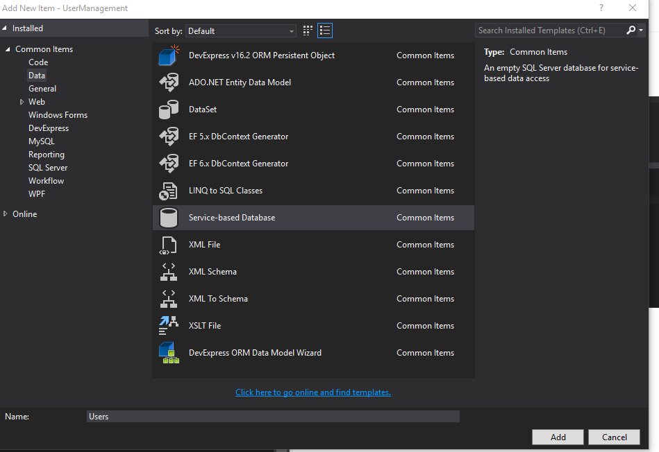
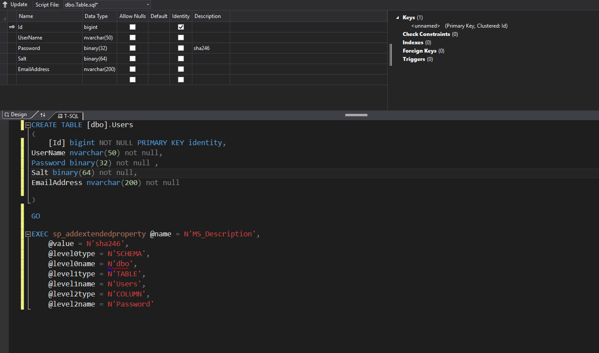

Setup Data
- Add database 
- Add user Table 
- Add Entity Framework Model
- Add EF Model

- Select Model Type

- Select DB objects to include in model

- Add EF Model
- Build Project (Ctrl+Shift+B)
GUI
- Add datasource
- Drag datasource to form
- Dock grid in form
- Edit columns to make grid have desired columns and properties


Code
- Alter User class to provide defaults when instane is created
- Build Project (Ctrl+Shift+B)
- Delete all tables in project db
- Set users.mdf Copy to Output Directory property to Copy if newer
- Delete Users.mdf and Users.ldf in bin/debug
- Open Package Manager Console

- Run Enable-Migrations
- Run Add-Migration "Add User table"
- Run update-database
- Code form functionality
- Repeat 5 and 6 each time you alter your code first classes. If you add another DBContext you will need to adjust the update-database command. It will tell you what you need to do.